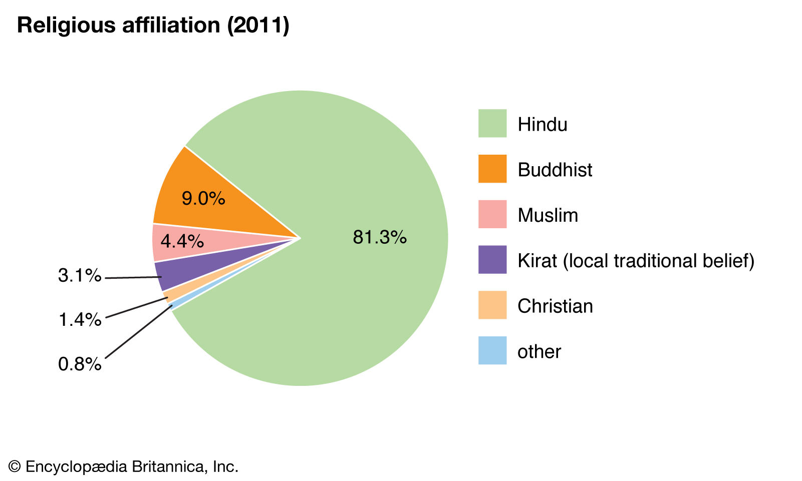
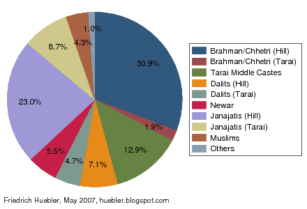

Home
Religions of Nepal
Religion in Nepal encompasses a wide diversity of groups and beliefs. Nepal is a secular nation and Secularism in Nepal under interim constitution (Part 1, Article 4) is defined as 'religious, cultural freedom, along with the protection of religion, culture handed down from time immemorial that is "the state government is bound for protecting and fostering Hindu religion" while maintaining "religious" and "cultural" freedom throughout the nation as fundamental rights. Federal Democratic Republic of Nepal's most popular practiced religions are Hinduism along with Buddhism which accounts for 81.3% & 9.04% of the overwhelming population of the nation as of 2011 respectively. According to a survey, Nepal is the most religious Hindu-majority country throughout the world, with most of the important Hindu pilgrimage centers concentrated in this country. Nepal is also the birthplace of Gautama Buddha because of which Buddhism has a very special place in the country and is often intertwined with Hinduism among some communities. It is a multi-cultural, multi-ethnic, multi-lingual and multi-religious nation through democracy.

Castes of Nepal
There are 126 caste/ethnic groups reported in the census 2011. Chhetri is the largest caste/ethnic groups having 16.6% (4,398,053) of the total population followed by Brahman-Hill (12.2%; 3,226,903), Magar (7.1% ; 1,887,733), Tharu (6.6% ; 1,737,470), Tamang (5.8% ; 1,539,830), Newar (5% ; 1,321,933), Kami (4.8% ; 1,258,554), Musalman (4.4% ; 1,164,255), Yadav (4% ; 1,054,458) and Rai (2.3% ; 620,004).
